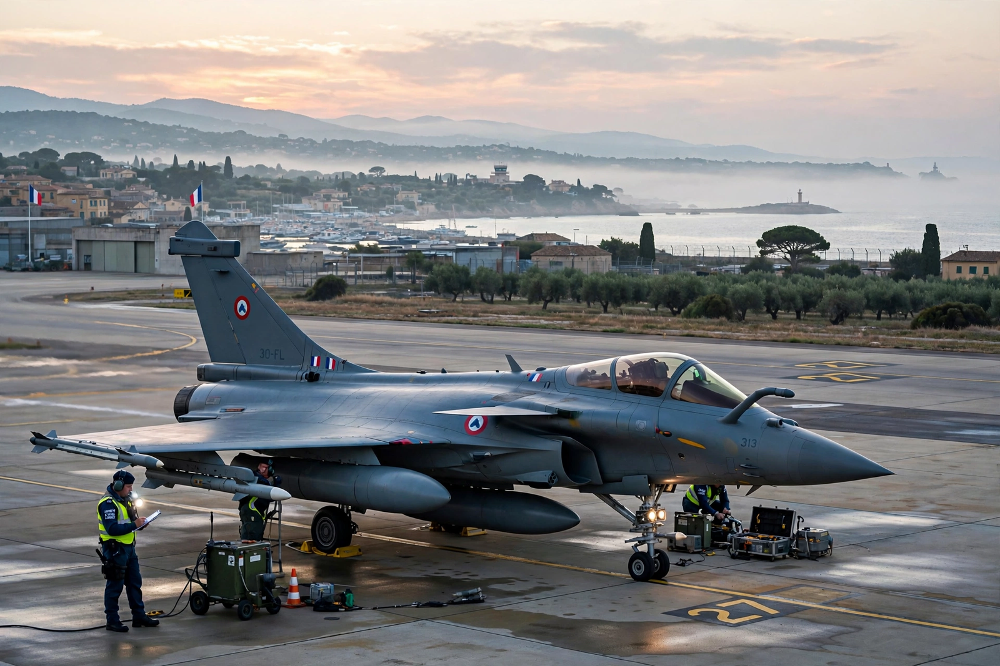

2011 military intervention in Libya

The 2011 military intervention in Libya was a multinational operation launched on 19 March 2011 to enforce United Nations Security Council Resolution 1973, which authorised a no-fly zone over Libya and "all necessary measures" to protect civilians during the First Libyan Civil War. Coalition air and naval forces, initially led by France, the United Kingdom and the United States and from 31 March by NATO as Operation Unified Protector, attacked the forces of Muammar Gaddafi, enabling rebel forces to overthrow his government by October 2011.
| Date | 19 March – 31 October 2011 |
|---|---|
| Location | Libya |
| Legal basis | UN Security Council Resolution 1973 |
| Operations | Odyssey Dawn (US-led); Ellamy (UK); Harmattan (France); Unified Protector (NATO) |
| Result | Fall and death of Muammar Gaddafi; NTC takes power |
Background
In February 2011, protests against Gaddafi's 42-year rule — part of the Arab Spring — escalated into armed rebellion after security forces fired on demonstrators. Rebels based in Benghazi formed the National Transitional Council (NTC), but by mid-March Gaddafi's forces had retaken most rebel-held towns and were advancing on Benghazi, with Gaddafi promising "no mercy". France recognised the NTC on 10 March; the Arab League called for a no-fly zone on 12 March. Resolution 1973, adopted on 17 March with Russia and China abstaining, demanded a ceasefire and authorised member states to protect civilians.
Operations
French aircraft struck Gaddafi's armour near Benghazi on 19 March, hours before a Paris summit concluded; US and British ships and submarines launched over 110 Tomahawk cruise missiles against Libyan air defences. The coalition enforced a naval arms embargo and a no-fly zone, and expanded strikes to command-and-control and ground forces supporting rebel advances. Qatar, the UAE and other Arab states contributed aircraft; Sweden participated in reconnaissance. NATO assumed command of the whole operation on 31 March.
Rebel forces, after months of stalemate, captured Tripoli in late August (Operation Mermaid Dawn). Gaddafi was captured and killed in Sirte on 20 October 2011. NATO terminated the mission on 31 October.
Debate and aftermath
Critics, including Russia, argued the coalition exceeded the Resolution 1973 mandate and effectively pursued regime change, a charge that influenced later Security Council paralysis over Syria. A 2016 UK parliamentary report concluded the intervention was based on erroneous assumptions about the threat to civilians and lacked post-war planning. Libya descended into factional conflict, a second civil war (2014–2020), and became a hub for militias, smuggling and migration routes across the Mediterranean.